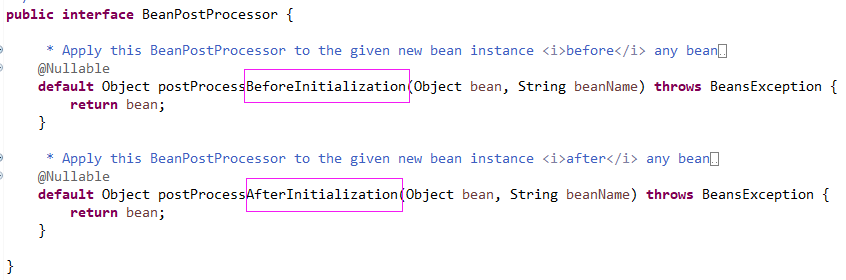
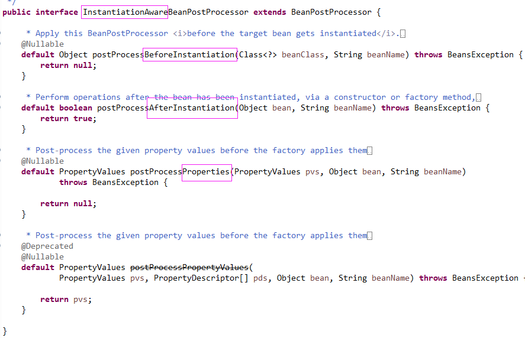
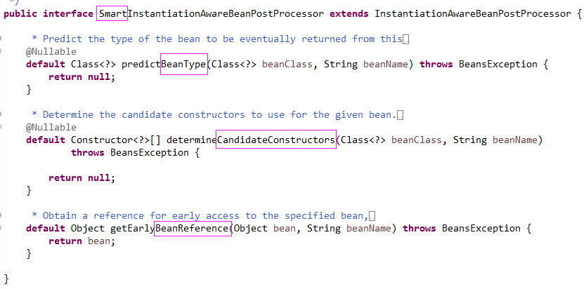
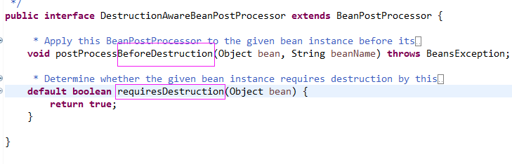
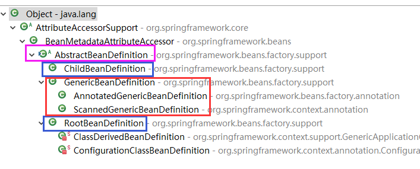
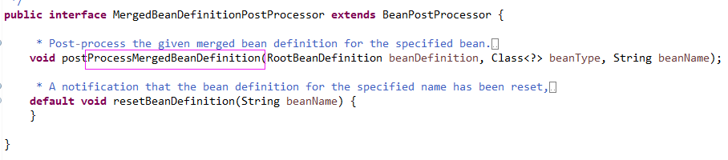

原文连接:https://www.cnblogs.com/lixinjie/p/taste-spring-012.html
一个小小的里程碑
首先感谢能看到本文的朋友，感谢你的一路陪伴。
如果每篇都认真看的话，会发现本系列以bean定义作为切入点，先是详细解说了什么是bean定义，接着又强调了bean定义为什么如此重要。
然后又讲了获取bean定义详细信息的方法，接着又讲了bean定义注册的若干种方式，然后是bean定义注册方式的实现细节。
最后又以SpringBoot应用为例，从容器启动前、启动后分两个阶段解说bean定义是如何进入到容器里的。
就是bean工厂后处理器配合使用@ComponentScan注解和@Import注解，一起完了所有bean定义的注册。
当bean定义注册完毕后，紧接着就是对单例（singleton）bean的实例化。此时容器处在启动中。
之前面试别人时问过一个问题，为什么Spring要在容器启动时就实例化所有单例bean，而不是放到首次使用时？
记忆中没有人回答到点上，原因很简单，就是为了提前发现潜在的错误。启动时报错比运行时报错好得多。
OK，从现在开始将进入一个新的阶段，即bean的实例化，bean的依赖装配，bean的初始化。
为了能够深度参与这个过程，使之更加灵活可配，Spring引入了bean后处理器的概念。
五个bean后处理器接口
bean后处理器主要应用于bean的创建过程中的一些操作，如检测下是否实现了指定接口，或用一个代理包装下bean实例，把代理返回等等。
首先来看第一个接口，BeanPostProcessor，如下图01：

可以看到这是一组对称的方法，一个是BeforeInitialization，一个是AfterInitialization。
一个在初始化前，一个在初始化后。所以首先要搞清楚什么是初始化？
在Spring中，初始化指的是在bean实例上执行一个特定的方法，该方法就称为初始化方法。
编程新说注：一般情况下，一个类一个初始化方法就够了，也可以有多个，Spring的源码实现是支持的。
那么如何指定这个初始化方法呢？共有三种方案可选：
1）实现Spring提供的一个接口，InitializingBean，它只有一个方法，就是afterPropertiesSet。
2）使用@Bean注解注册bean定义时，设置注解的initMethod属性为bean的一个方法名。
3）使用java的注解@PostConstruct，把它标在bean的一个方法上。
这三种方式指定的方法都是初始化方法，所谓初始化就是调用这些方法。
所以这个接口的两个方法的调用位置就是：
bean的实例化-> bean的依赖装配 -> 接口方法一（初始化前） -> bean的初始化方法 -> 接口方法二（初始化后） -> OK。
我们可以看到，这个接口的切入位置是在bean的依赖已经装配好之后，似乎有些“晚了”，因为这样只能参与bean的初始化，有没有稍靠前的？
当然有了，接着看第二个接口，InstantiationAwareBeanPostProcessor，如下图02：

接口的名字中有InstantiationAware，说明是“实例化感知”的bean后处理器。即可以参与到bean的实例化过程中。确实比上一个接口提前了。
接口有三个方法，一个是BeforeInstantiation，一个是AfterInstantiation，一个是Properties。光从名字上就能看出个七七八八了。
所以这个接口的三个方法的调用位置就是：
bean的实例化准备阶段 -> 接口方法一（实例化前）-> bean的实例化 -> 接口方法二（实例化后） -> 接口方法三（定制bean所需的属性值） -> bean的属性设置 -> OK。
第一个方法在bean实例化前调用，如果返回一个非null对象，则Spring就使用这个对象了，不再进行实例化了。
所以这里可以返回一个目标bean的代理，来压制（延迟）目标bean的实例化。
这个方法的参数是bean的类型，因为此时还没有bean实例呢。
第二个方法在bean实例化后且属性设置（显式的属性设置或依赖的装配）前调用。
这是一个理想的地方用来执行自定义字段注入，因为此时Spring的自动装配尚未到来。
通常方法返回true，如果返回false，后续的属性设置将被跳过。
同时，后面的该接口类型的实例都将不会再在这个bean实例上调用。
第三个方法在bean属性设置前调用，可以用来定制即将为bean实例设置的属性。
方法pvs是传进来的已有属性。方法默认返回null。表示不对属性进行操作。
第四个方法现已经废除，等它移除后，第三个方法将默认返回pvs。
下面看第三个接口，SmartInstantiationAwareBeanPostProcessor，也是和bean创建相关的，如下图03:

这个接口也有三个方法：
第一个方法，用来预测最终的bean类型，这是给我们提供一个修改bean类型的机会，方法的参数是原始的bean类型。
如果方法返回null，则不进行预测，按照Spring自己的逻辑走。
第二个方法，用来确定候选的构造方法，给我们一个定制构造方法的机会，方法的参数是原始的bean类型。
如果方法返回null，则不进行指定，按照Spring自己的逻辑去判断出最适合的构造方法。
第三个方法，用来获取一个早期bean实例的引用。为什么说是早期呢？因为bean实例的初始化方法还没有执行。
编程新说注：可以认为此时的bean还处于一种不完善的状态。
典型的用法是可以用来解决循环引用。这个地方可以在目标bean完全初始化之前较早地暴露一个包装器。
第四个接口，说完了bean的创建，再来看看bean的销毁，DestructionAwareBeanPostProcessor，如下图04：

这个接口比较简单，只有两个方法：
第一个方法，在bean实例销毁前会被调用，来执行一些定制的销毁代码。
这些销毁代码通常位于一个方法里，叫做销毁方法，是与初始化方法对应的。
同样也有三种方式来指定销毁方法：
1）实现Spring提供的一个接口，DisposableBean，它只有一个方法destroy。
2）使用@Bean注解注册bean定义时，设置注解的destroyMethod属性为bean的一个方法名。
3）使用java的注解@PreDestroy，把它标在bean的一个方法上。
这三种方式指定的都是销毁方法。如果指定了的话，就在刚刚的接口方法里调用了。
只有被容器完全管理生命周期的bean才会应用，如singleton和scoped的bean实例。
第二个方法，就是决定是否要为bean实例调用第一个方法来执行一些销毁代码。
返回true表示需要，false表示不需要调用。
因为第五个接口是和bean定义有关系的，所以先来看看bean定义的实现类都有哪些。
有几个类需要了解一下，如下图05：

1）AbstractBeanDefinition，是所有bean定义的父类。
2）RootBeanDefinition，是在XML配置时代，注册bean定义时用的类。
3）ChildBeanDefinition，是在XML配置时代，注册bean定义时用的类，必须在配置时指定一个父bean定义。
4）GenericBeanDefinition，在注解配置时代，推荐使用的bean定义类，可以在运行时动态指定一个父bean定义，也可以不指定。
5）AnnotatedGenericBeanDefinition，在注解配置时代，通过编程方式注册bean定义时用的类，继承了GenericBeanDefinition。
6）ScannedGenericBeanDefinition，在注解配置时代，通过扫描jar包中.class文件的方式注册bean定义时用的类，继承了GenericBeanDefinition。
来分析一下，第3必须有一个父bean定义，第4可以有一个父bean定义，第5、6继承自第4。第1是一个抽象类。
所以只有第2是一个没有父bean定义且非抽象的类，因此，Spring会先把bean定义转换为第2。然后再生成bean实例。
因为可能存在父子关系，所以需要合并bean定义。父子关系其实就是一种“继承”和“重写”。
子可以继承父的信息，也可以重写父的信息，同样也有些信息不继承，只使用子自己的。
这种继承可以是多级的，如A继承B，B继承C，C继承D。
在合并bean定义时，会把A、B、C、D合起来变成一个M，但是ABCD本身不会再被改变。
合成的bean定义M会被缓存起来，就是用它来生成bean实例的。
这些基本知识了解了之后，接下来看最后一个接口。
第五个接口，MergedBeanDefinitionPostProcessor，如下图06：

这个接口的主要目的不是用来修改合并后的bean定义的，虽然也可以进行一些修改。
它主要用来进行一些自省操作，如一些检测，或在处理bean实例之前缓存一些相关的元数据。
这些作用都在第一个方法里实现。第二个方法是一个通知方法，当一个bean定义被重置时调用。
这个方法用于清除和受影响的bean相关的任何元数据。
>>> 品Spring系列文章 <<<
品Spring：SpringBoot和Spring到底有没有本质的不同？
品Spring：SpringBoot轻松取胜bean定义注册的“第一阶段”
品Spring：SpringBoot发起bean定义注册的“二次攻坚战”
品Spring：注解之王@Configuration和它的一众“小弟们”
>>> 热门文章集锦 <<<
爸爸又给Spring MVC生了个弟弟叫Spring WebFlux
【面试】吃透了这些Redis知识点，面试官一定觉得你很NB（干货 | 建议珍藏）
【面试】如果你这样回答“什么是线程安全”，面试官都会对你刮目相看（建议珍藏）
【面试】迄今为止把同步/异步/阻塞/非阻塞/BIO/NIO/AIO讲的这么清楚的好文章（快快珍藏）
【面试】一篇文章帮你彻底搞清楚“I/O多路复用”和“异步I/O”的前世今生（深度好文，建议珍藏）
作者是工作超过10年的码农，现在任架构师。喜欢研究技术，崇尚简单快乐。追求以通俗易懂的语言解说技术，希望所有的读者都能看懂并记住。下面是公众号和知识星球的二维码，欢迎关注！